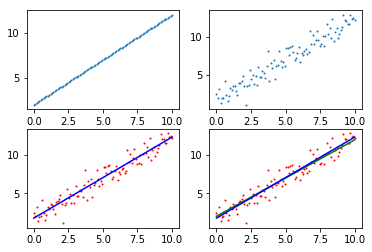
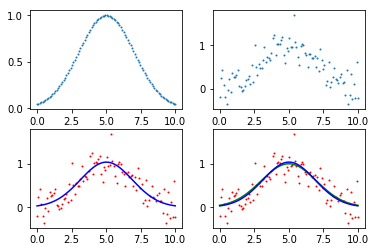
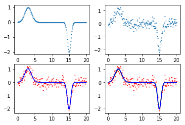
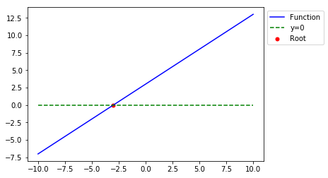
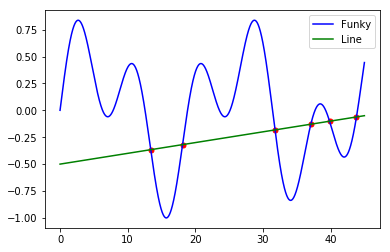
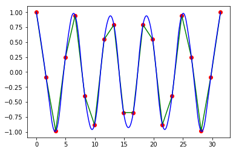
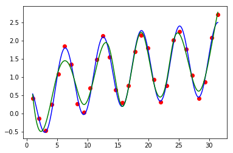
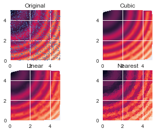

6 Python科学计算
6.1 NumPy
6.1.1 NumPy数组
import numpy as np
import numpy.random as rand
import matplotlib.pyplot as plt## Numpy克服了Python中list速度慢的缺点，创建了新数据类型ndarray
## ndarray的每列元素一般是相同类型的，是浮点数、整型或字符串，这点和list不同
## 下面的例子测试对比了ndarray和list速度上的区别
## 首先建立一个0...10^7-1的10^7个元素的数组
arr=np.arange(1e7)
## 将ndarray转换为list
larr=arr.tolist()
## 工具函数，模拟ndarray把list的每个元素乘以一个标量的运算
def list_times(alist, scalar):
for i, val in enumerate(alist):
alist[i]=val*scalar
return alist
## 比较ndarray和list每个元素乘以一个标量的运行时间
## 在我的电脑上，ndarray乘以一个标量的运行时间要比list快约33倍
%timeit arr*1.1
%timeit list_times(larr,1.1)37 ms ± 1.49 ms per loop (mean ± std. dev. of 7 runs, 10 loops each)
1.22 s ± 41.4 ms per loop (mean ± std. dev. of 7 runs, 1 loop each)## 两个2维ndarray相乘是对应元素相乘，而两个matrix相乘是进行矩阵乘法
## matrix只有2维，以下代码运行会出错：shape too large to be a matrix
arr=np.zeros((3,3,3))
mat=np.matrix(arr)---------------------------------------------------------------------------
ValueError Traceback (most recent call last)
<ipython-input-2-667d2452a8e0> in <module>()
2 # matrix只有2维，以下代码运行会出错
3 arr=np.zeros((3,3,3))
----> 4 mat=np.matrix(arr)
~/anaconda3/lib/python3.6/site-packages/numpy/matrixlib/defmatrix.py in __new__(subtype, data, dtype, copy)
224 else:
225 intype = N.dtype(dtype)
--> 226 new = data.view(subtype)
227 if intype != data.dtype:
228 return new.astype(intype)
~/anaconda3/lib/python3.6/site-packages/numpy/matrixlib/defmatrix.py in __array_finalize__(self, obj)
269 return
270 elif (ndim > 2):
--> 271 raise ValueError("shape too large to be a matrix.")
272 else:
273 newshape = self.shape
ValueError: shape too large to be a matrix.6.1.1.1 创建数组和定义数据类型
## 在NumPy中，创建数组有多种方法
## 首先创建一个list，然后用np.array()方法把它包裹起来
alist=[1,2,3]
arr=np.array(alist)
arrarray([1, 2, 3])## 创建一个5个元素的全零数组
arr=np.zeros(5)
arrarray([ 0., 0., 0., 0., 0.])## 创建一个从0到99的数组
arr=np.arange(100)
arrarray([ 0, 1, 2, 3, 4, 5, 6, 7, 8, 9, 10, 11, 12, 13, 14, 15, 16,
17, 18, 19, 20, 21, 22, 23, 24, 25, 26, 27, 28, 29, 30, 31, 32, 33,
34, 35, 36, 37, 38, 39, 40, 41, 42, 43, 44, 45, 46, 47, 48, 49, 50,
51, 52, 53, 54, 55, 56, 57, 58, 59, 60, 61, 62, 63, 64, 65, 66, 67,
68, 69, 70, 71, 72, 73, 74, 75, 76, 77, 78, 79, 80, 81, 82, 83, 84,
85, 86, 87, 88, 89, 90, 91, 92, 93, 94, 95, 96, 97, 98, 99])## 10到99的数组？
arr=np.arange(10,100)
arrarray([10, 11, 12, 13, 14, 15, 16, 17, 18, 19, 20, 21, 22, 23, 24, 25, 26,
27, 28, 29, 30, 31, 32, 33, 34, 35, 36, 37, 38, 39, 40, 41, 42, 43,
44, 45, 46, 47, 48, 49, 50, 51, 52, 53, 54, 55, 56, 57, 58, 59, 60,
61, 62, 63, 64, 65, 66, 67, 68, 69, 70, 71, 72, 73, 74, 75, 76, 77,
78, 79, 80, 81, 82, 83, 84, 85, 86, 87, 88, 89, 90, 91, 92, 93, 94,
95, 96, 97, 98, 99])## 0到1，中间有100步，linear space
arr=np.linspace(0,1,100)
arrarray([ 0. , 0.01010101, 0.02020202, 0.03030303, 0.04040404,
0.05050505, 0.06060606, 0.07070707, 0.08080808, 0.09090909,
0.1010101 , 0.11111111, 0.12121212, 0.13131313, 0.14141414,
0.15151515, 0.16161616, 0.17171717, 0.18181818, 0.19191919,
0.2020202 , 0.21212121, 0.22222222, 0.23232323, 0.24242424,
0.25252525, 0.26262626, 0.27272727, 0.28282828, 0.29292929,
0.3030303 , 0.31313131, 0.32323232, 0.33333333, 0.34343434,
0.35353535, 0.36363636, 0.37373737, 0.38383838, 0.39393939,
0.4040404 , 0.41414141, 0.42424242, 0.43434343, 0.44444444,
0.45454545, 0.46464646, 0.47474747, 0.48484848, 0.49494949,
0.50505051, 0.51515152, 0.52525253, 0.53535354, 0.54545455,
0.55555556, 0.56565657, 0.57575758, 0.58585859, 0.5959596 ,
0.60606061, 0.61616162, 0.62626263, 0.63636364, 0.64646465,
0.65656566, 0.66666667, 0.67676768, 0.68686869, 0.6969697 ,
0.70707071, 0.71717172, 0.72727273, 0.73737374, 0.74747475,
0.75757576, 0.76767677, 0.77777778, 0.78787879, 0.7979798 ,
0.80808081, 0.81818182, 0.82828283, 0.83838384, 0.84848485,
0.85858586, 0.86868687, 0.87878788, 0.88888889, 0.8989899 ,
0.90909091, 0.91919192, 0.92929293, 0.93939394, 0.94949495,
0.95959596, 0.96969697, 0.97979798, 0.98989899, 1. ])## log10空间里1到10的数组，中间有100步
## numpy.logspace(start, stop, num=50, endpoint=True, base=10.0, dtype=None)
## base**start是数组的第一个元素，base**stop是数组的最后一个元素
arr=np.logspace(0,1,100,base=10.0)
arrarray([ 1. , 1.02353102, 1.04761575, 1.07226722,
1.09749877, 1.12332403, 1.149757 , 1.17681195,
1.20450354, 1.23284674, 1.26185688, 1.29154967,
1.32194115, 1.35304777, 1.38488637, 1.41747416,
1.45082878, 1.48496826, 1.51991108, 1.55567614,
1.59228279, 1.62975083, 1.66810054, 1.70735265,
1.7475284 , 1.78864953, 1.83073828, 1.87381742,
1.91791026, 1.96304065, 2.009233 , 2.05651231,
2.10490414, 2.15443469, 2.20513074, 2.25701972,
2.3101297 , 2.36448941, 2.42012826, 2.47707636,
2.53536449, 2.59502421, 2.65608778, 2.71858824,
2.7825594 , 2.84803587, 2.91505306, 2.98364724,
3.05385551, 3.12571585, 3.19926714, 3.27454916,
3.35160265, 3.43046929, 3.51119173, 3.59381366,
3.67837977, 3.76493581, 3.85352859, 3.94420606,
4.03701726, 4.1320124 , 4.22924287, 4.32876128,
4.43062146, 4.53487851, 4.64158883, 4.75081016,
4.86260158, 4.97702356, 5.09413801, 5.21400829,
5.33669923, 5.46227722, 5.59081018, 5.72236766,
5.85702082, 5.9948425 , 6.13590727, 6.28029144,
6.42807312, 6.57933225, 6.73415066, 6.8926121 ,
7.05480231, 7.22080902, 7.39072203, 7.56463328,
7.74263683, 7.92482898, 8.11130831, 8.30217568,
8.49753436, 8.69749003, 8.90215085, 9.11162756,
9.32603347, 9.54548457, 9.77009957, 10. ])## 创建一个5*5的全零数组
image=np.zeros((5,5))
imagearray([[ 0., 0., 0., 0., 0.],
[ 0., 0., 0., 0., 0.],
[ 0., 0., 0., 0., 0.],
[ 0., 0., 0., 0., 0.],
[ 0., 0., 0., 0., 0.]])## 创建一个5*5*5的全1的cube
## astype()方法将数组的元素全部设为整型
cube=np.zeros((5,5,5)).astype(int)+1
cubearray([[[1, 1, 1, 1, 1],
[1, 1, 1, 1, 1],
[1, 1, 1, 1, 1],
[1, 1, 1, 1, 1],
[1, 1, 1, 1, 1]],
[[1, 1, 1, 1, 1],
[1, 1, 1, 1, 1],
[1, 1, 1, 1, 1],
[1, 1, 1, 1, 1],
[1, 1, 1, 1, 1]],
[[1, 1, 1, 1, 1],
[1, 1, 1, 1, 1],
[1, 1, 1, 1, 1],
[1, 1, 1, 1, 1],
[1, 1, 1, 1, 1]],
[[1, 1, 1, 1, 1],
[1, 1, 1, 1, 1],
[1, 1, 1, 1, 1],
[1, 1, 1, 1, 1],
[1, 1, 1, 1, 1]],
[[1, 1, 1, 1, 1],
[1, 1, 1, 1, 1],
[1, 1, 1, 1, 1],
[1, 1, 1, 1, 1],
[1, 1, 1, 1, 1]]])## 或者用更简单的方法创建全1数组，元素是16位浮点精度
cube=np.ones((5,5,5)).astype(np.float16)
cubearray([[[ 1., 1., 1., 1., 1.],
[ 1., 1., 1., 1., 1.],
[ 1., 1., 1., 1., 1.],
[ 1., 1., 1., 1., 1.],
[ 1., 1., 1., 1., 1.]],
[[ 1., 1., 1., 1., 1.],
[ 1., 1., 1., 1., 1.],
[ 1., 1., 1., 1., 1.],
[ 1., 1., 1., 1., 1.],
[ 1., 1., 1., 1., 1.]],
[[ 1., 1., 1., 1., 1.],
[ 1., 1., 1., 1., 1.],
[ 1., 1., 1., 1., 1.],
[ 1., 1., 1., 1., 1.],
[ 1., 1., 1., 1., 1.]],
[[ 1., 1., 1., 1., 1.],
[ 1., 1., 1., 1., 1.],
[ 1., 1., 1., 1., 1.],
[ 1., 1., 1., 1., 1.],
[ 1., 1., 1., 1., 1.]],
[[ 1., 1., 1., 1., 1.],
[ 1., 1., 1., 1., 1.],
[ 1., 1., 1., 1., 1.],
[ 1., 1., 1., 1., 1.],
[ 1., 1., 1., 1., 1.]]], dtype=float16)## NumPy在生成数组时，默认使用系统的字长来创建数组元素
## 在64位的Python环境中，数组元素默认为64位精度的浮点数
## 这种设定消耗大量内存，很多时候并非必要
## 在创建数组时，用户可以自己设定元素的精度，即把dtype参数设为int, numpy.float16,
## numpy.float32, numpy.float64
## 下面定义了一个全零的整型数组
arr1=np.zeros(2,dtype=int)
## 下面定义了一个全零的浮点型数组
arr2=np.zeros(2,dtype=np.float32)
print(arr1)
print(arr2)[0 0]
[ 0. 0.]## 数组变形
## 创建一个125个元素的数组
arr1d=np.arange(125)
## 把数组变形为5*5*5的三维数组
arr3d=arr1d.reshape((5,5,5))
## 另一种效果相同的变形方法
arr3d=np.reshape(arr1d,(5,5,5))
print(arr3d)
## 把高维数组变形为一维数组
arr4d=np.zeros((10,10,10,10))
arr1d=arr4d.ravel()
print(arr1d.shape)
## 值得注意的是，数组的变形只是改变观察数组的角度，
## 并没有新创建数组，变形后的数组和变形前的数组使用的是相同的内存空间
## 因此改动其中一个数组的元素，另一个数组的元素也会跟着改变
## 要创建内存中完全不同的数组，需要使用numpy.copy函数[[[ 0 1 2 3 4]
[ 5 6 7 8 9]
[ 10 11 12 13 14]
[ 15 16 17 18 19]
[ 20 21 22 23 24]]
[[ 25 26 27 28 29]
[ 30 31 32 33 34]
[ 35 36 37 38 39]
[ 40 41 42 43 44]
[ 45 46 47 48 49]]
[[ 50 51 52 53 54]
[ 55 56 57 58 59]
[ 60 61 62 63 64]
[ 65 66 67 68 69]
[ 70 71 72 73 74]]
[[ 75 76 77 78 79]
[ 80 81 82 83 84]
[ 85 86 87 88 89]
[ 90 91 92 93 94]
[ 95 96 97 98 99]]
[[100 101 102 103 104]
[105 106 107 108 109]
[110 111 112 113 114]
[115 116 117 118 119]
[120 121 122 123 124]]]
(10000,)6.1.1.2 记录数组（Record Arrays）
## 数组一般来说是只包含一种数据类型，不过有些时候数组可以用来存储更复杂的数据结构，
## 每列由不同的数据类型组成，叫做记录数组
## 创建一个全零数组，定义列的类型（i4：32位整数，f4：32位浮点数，a10：长度为10的字符串）
recarr=np.zeros((2,),dtype=('i4,f4,a10'))
## 创建我们想放进recarr数组的列
col1=np.arange(2)+1 # array([1,2])
col2=np.arange(2,dtype=np.float32) # array([0.,1.], dtype=float32)
col3=["Hello","World"]
## 创建一个列表，整合上面3列
toadd=list(zip(col1,col2,col3))
## 给recarr赋值
recarr[:]=toadd
recarr
## 结果中字符串前的"b"：python3.x里默认的str是(py2.x里的)unicode,
## bytes是(py2.x)的str, b”“前缀代表的就是bytesarray([(1, 0., b'Hello'), (2, 1., b'World')],
dtype=[('f0', '<i4'), ('f1', '<f4'), ('f2', 'S10')])## 给每一列赋一个名字，默认的名字是f0, f1, f2
recarr.dtype.names=("Integers","Floats","Strings")
## 用列的名字访问一列
recarr["Integers"]array([1, 2], dtype=int32)6.1.1.3 索引和切割
## 要返回任意列，在Python的列表里不太容易，但在NumPy数组里很方便
## 定义一个列表
alist=[[1,2],[3,4]]
## 把列表转换为一个NumPy数组
arr=np.array(alist)
## 打印(0,1)元素
print(arr[0,1])
## 打印第二列
print(arr[:,1])
## 打印第二行
print(arr[1,:])2
[2 4]
[3 4]## 条件索引，常用numpy.where()，可以返回数组中需要的索引，基于条件，不考虑维度
## 创建一个数组
arr=np.arange(5)
## 创建索引数组
index=np.where(arr>2)
print(index)
## 根据索引创建需要的数组
new_arr1=arr[index]
print(new_arr)
## 使用np.delete()删除特定的索引
## 删除index中包含的元素
new_arr2=np.delete(arr,index)
print(new_arr2)
## 用简单的布尔列表作为下标返回需要的数组
## 使用布尔索引获得需要的元素比np.where()要迅速，并且可以通过~index轻易地反转布尔数组
index=arr>2
print(index)
new_arr=arr[index]
print(new_arr)(array([3, 4]),)
[3 4]
[0 1 2]
[False False False True True]
[3 4]6.1.2 布尔语句和NumPy数组
## 创建一个图片
img1=np.zeros((20,20))+3
img1[4:-4,4:-4]=6
img1[7:-7,7:-7]=9
## 见Plot A
## compound_index变量存储所有大于2或小于6的下标
index1=img1>2
index2=img1<6
compound_index=index1 & index2
## 复合索引的语句也可以写成这样：
compound_index=(img1>3) & (img1<7)
img2=np.copy(img1)
img2[compound_index]=0
## 见Plot B
## 使用更复杂的布尔数组
index3=img1==9
index4=(index1 & index2) | index3
img3=np.copy(img1)
img3[index4]=0
## 见Plot C## 仅变更数组中选中变量的值
## 依据标准正态分布（均值为0，方差为1）创建一个100个随机元素的数组
a=rand.randn(100)
print(a)
## 去掉不需要的元素
index=a>0.2
b=a[index]
## 在选出的元素上应用某些运算
b=b**2-2
## 把修改过的元素仍然放回原来的数组，这样就完成了对数组中某些值得变更
a[index]=b
print(a)[-1.80712517 -0.13170284 1.93343213 0.80721035 2.52144275 0.16195953
0.11878839 1.88961184 -0.75881407 -1.22866865 -0.73857745 0.64046896
0.73563193 0.71783485 -0.37645069 0.90120663 -0.59161068 -1.16366655
-0.50663906 -0.36447979 -1.8654699 0.92406343 0.8004173 -1.41016169
0.32592465 0.725013 0.29738016 -2.21113871 -0.68122701 0.66455187
-0.32413105 1.13627295 0.13185364 1.38536725 0.19462378 -1.80775106
-0.06199759 -1.30422952 -0.30685345 0.08940313 -0.67023186 -0.15051653
-0.15879759 1.35984567 -0.2328225 -1.7265208 0.67232358 -0.59098342
-1.20227104 -1.08216219 -0.53158487 1.33859499 0.66763318 -0.56431746
0.75334062 1.44683156 1.9512399 0.42510796 0.34020597 0.72372802
-0.10372294 0.184639 0.01761624 -0.69082466 0.36432908 -0.56651026
0.21865567 -0.42096267 -0.73512854 -0.05493638 -1.94869892 0.76399321
1.41936848 0.05750032 -0.12937963 -0.02329108 -1.47156894 -0.84254776
0.75245785 0.07682322 0.96333808 0.92090036 0.76489123 0.63520238
-0.08737849 -1.2083732 0.21328152 0.92891946 0.26792553 0.0672728
-1.74821241 0.69335543 -0.60076278 -0.11200103 -1.4392716 -0.35400569
-0.05871362 0.8178716 1.08160928 0.77033013]
[-1.80712517 -0.13170284 1.73815979 -1.34841145 4.35767354 0.16195953
0.11878839 1.57063289 -0.75881407 -1.22866865 -0.73857745 -1.58979952
-1.45884566 -1.48471313 -0.37645069 -1.1878266 -0.59161068 -1.16366655
-0.50663906 -0.36447979 -1.8654699 -1.14610677 -1.35933214 -1.41016169
-1.89377312 -1.47435616 -1.91156504 -2.21113871 -0.68122701 -1.55837081
-0.32413105 -0.70888379 0.13185364 -0.08075759 0.19462378 -1.80775106
-0.06199759 -1.30422952 -0.30685345 0.08940313 -0.67023186 -0.15051653
-0.15879759 -0.15081976 -0.2328225 -1.7265208 -1.547981 -0.59098342
-1.20227104 -1.08216219 -0.53158487 -0.20816344 -1.55426593 -0.56431746
-1.43247792 0.09332155 1.80733714 -1.81928322 -1.8842599 -1.47621775
-0.10372294 0.184639 0.01761624 -0.69082466 -1.86726432 -0.56651026
-1.9521897 -0.42096267 -0.73512854 -0.05493638 -1.94869892 -1.41631438
0.01460689 0.05750032 -0.12937963 -0.02329108 -1.47156894 -0.84254776
-1.43380718 0.07682322 -1.07197974 -1.15194253 -1.4149414 -1.59651793
-0.08737849 -1.2083732 -1.95451099 -1.13710863 -1.92821591 0.0672728
-1.74821241 -1.51925824 -0.60076278 -0.11200103 -1.4392716 -0.35400569
-0.05871362 -1.33108605 -0.83012136 -1.40659148]6.1.3 NumPy读写文件
## NumPy读文本文件中的矩阵
arr=np.loadtxt("data5/somefile.txt")
arrarray([[ 2., 3., 5.],
[ 7., 11., 13.],
[ 17., 19., 23.]])## NumPy写矩阵到文本文件中
## numpy.savetxt(fname, X, fmt='%.18e', delimiter=' ', newline='\n',
## header='', footer='', comments='# ', encoding=None)[source]
np.savetxt("data5/somenewfile.txt",arr,"%d","\t")## loadtxt()读取文件中复杂的数据结构
recarr=np.loadtxt("data5/example.txt", dtype={
"names":("Gene_ID","Sample1","Sample2","Sample3"),
"formats":("S6","f4","f4","f4")})
recarrarray([(b'Gene1', 2.29999995, 5.69999981, 11.13000011),
(b'Gene2', 17.19000053, 23.29000092, 31.37000084)],
dtype=[('Gene_ID', 'S6'), ('Sample1', '<f4'),
('Sample2', '<f4'), ('Sample3', '<f4')])6.1.4 NumPy的Math模块
6.1.4.1 线性代数
## 解矩阵方程AX=B
## 定义矩阵A, B
A=np.matrix([[3,6,-5],[1,-3,2],[5,-1,4]])
B=np.matrix([[12],[-2],[10]])
## 解矩阵方程，等号两边同时左乘A^(-1)
X=A**-1*B
print(X)[[ 1.75]
[ 1.75]
[ 0.75]]## 使用np.array，更快
a=np.array([[3,6,-5],[1,-3,2],[5,-1,4]])
b=np.array([[12],[-2],[10]])
x=np.linalg.inv(a).dot(b)
print(x)[[ 1.75]
[ 1.75]
[ 0.75]]6.2 SciPy
6.2.1 最优化和最小化
6.2.1.1 数据建模和拟合
from scipy.optimize import curve_fit## 拟合线性分布
## 创建一个函数，用来建模和创建数据
def func(x,a,b):
return a*x+b
## 生成干净的数据
x=np.linspace(0,10,100)
y=func(x,1,2)
## 加入噪声
yn=y+0.9*np.random.normal(size=len(x))
## 在有噪声的数据上应用curve_fit
## popt返回给定模型（func）下的参数的最佳拟合值
## pcov返回一个矩阵表示拟合的质量，矩阵对角线上的值是各参数的方差
popt,pcov=curve_fit(func,x,yn)
print(popt)[ 1.06107439 1.7517619 ]fig=plt.figure()
ax1=fig.add_subplot(2,2,1)
ax2=fig.add_subplot(2,2,2)
ax3=fig.add_subplot(2,2,3)
ax4=fig.add_subplot(2,2,4)
ax1.scatter(x,y,1)
ax2.scatter(x,yn,1)
ax3.scatter(x,yn,1,"red")
ax3.plot(x,popt[0]*x+popt[1],"blue")
ax4.scatter(x,yn,1,"red")
ax4.plot(x,y,"green")
ax4.plot(x,popt[0]*x+popt[1],"blue")
plt.show()
## 拟合高斯分布
## 创建一个函数，用来建模和创建数据
def func(x,a,b,c):
return a*np.exp(-(x-b)**2/(2*c**2))
## 生成干净的数据
x=np.linspace(0,10,100)
y=func(x,1,5,2)
## 加入噪声
yn=y+0.2*np.random.normal(size=len(x))
## 在有噪声的数据上应用curve_fit
## popt返回给定模型（func）下的参数的最佳拟合值
## pcov返回一个矩阵表示拟合的质量，矩阵对角线上的值是各参数的方差
popt, pcov = curve_fit(func, x, yn)
print(popt)[ 1.03822218 5.01637962 -1.88413558]fig=plt.figure()
ax1=fig.add_subplot(2,2,1)
ax2=fig.add_subplot(2,2,2)
ax3=fig.add_subplot(2,2,3)
ax4=fig.add_subplot(2,2,4)
ax1.scatter(x,y,1)
ax2.scatter(x,yn,1)
ax3.scatter(x,yn,1,"red")
ax3.plot(x,popt[0]*np.exp(-(x-popt[1])**2/(2*popt[2]**2)),"blue")
ax4.scatter(x,yn,1,"red")
ax4.plot(x,y,"green")
ax4.plot(x,popt[0]*np.exp(-(x-popt[1])**2/(2*popt[2]**2)),"blue")
plt.show()
## 拟合两个高斯分布的线性组合
## 创建一个函数，用来建模和创建数据
def func(x,a0,b0,c0,a1,b1,c1):
return a0*np.exp(-(x-b0)**2/(2*c0**2))+a1*np.exp(-(x-b1)**2/(2*c1**2))
## 生成干净的数据
x=np.linspace(0,20,200)
y=func(x,1,3,1,-2,15,0.5)
## 加入噪声
yn=y+0.2*np.random.normal(size=len(x))
## 在有噪声的数据上应用curve_fit
## popt返回给定模型（func）下的参数的最佳拟合值
## pcov返回一个矩阵表示拟合的质量，矩阵对角线上的值是各参数的方差
popt, pcov = curve_fit(func, x, yn)
print(popt)[ -2.04644312 14.99180963 0.50668406 1.05196114 2.97782597
0.99894884]fig=plt.figure()
ax1=fig.add_subplot(2,2,1)
ax2=fig.add_subplot(2,2,2)
ax3=fig.add_subplot(2,2,3)
ax4=fig.add_subplot(2,2,4)
ax1.scatter(x,y,1)
ax2.scatter(x,yn,1)
ax3.scatter(x,yn,1,"red")
ax3.plot(x,popt[0]*np.exp(-(x-popt[1])**2/(2*popt[2]**2))+
popt[3]*np.exp(-(x-popt[4])**2/(2*popt[5]**2)),"blue")
ax4.scatter(x,yn,1,"red")
ax4.plot(x,y,"green")
ax4.plot(x,popt[0]*np.exp(-(x-popt[1])**2/(2*popt[2]**2))+
popt[3]*np.exp(-(x-popt[4])**2/(2*popt[5]**2)),"blue")
ax4.legend(loc=0, bbox_to_anchor=(1,1))
plt.show()
6.2.1.2 函数的解
from scipy.optimize import fsolveline=lambda x:x+3
solution=fsolve(line,-2)
print(solution)[-3.]fig = plt.figure()
ax=fig.add_subplot(1,1,1)
x=np.linspace(-10,10,100)
zeros=np.zeros(100)
ax.plot(x,line(x),"blue",label="Function")
ax.plot(x,zeros,"g--",label="y=0")
ax.scatter(solution,line(solution),25,"red",label="Root")
ax.legend(loc="best", bbox_to_anchor=(1,1))
plt.show()
## 找到两个函数的交点
## 定义一个函数来简化求交点的过程
def findIntersection(func1,func2,x0):
return fsolve(lambda x:func1(x)-func2(x),x0)
## 定义两个函数，准备求它们的交点
funky=lambda x:np.cos(x/5)*np.sin(x/2)
line=lambda x:0.01*x-0.5
## 设置函数的定义域，求两个函数的交点
x=np.linspace(0,45,10000)
result=findIntersection(funky,line,[15,20,30,35,40,45])
## 打印交点的坐标
print(result,line(result))[ 13.40773078 18.11366128 31.78330863 37.0799992 39.84837786
43.8258775 ] [-0.36592269 -0.31886339 -0.18216691 -0.12920001 -0.10151622 -0.06174122]fig = plt.figure()
ax=fig.add_subplot(1,1,1)
x=np.linspace(0,45,10000)
ax.plot(x,funky(x),"blue",label="Funky")
ax.plot(x,line(x),"green",label="Line")
ax.scatter(result,line(result),25,"red")
ax.legend(loc="best", bbox_to_anchor=(1,1))
plt.show()
6.2.2 插值
- 插值法在离散数据的基础上补插连续函数，使得这条连续曲线通过全部给定的离散数据点。
- 插值是离散函数逼近的重要方法，利用它可通过函数在有限个点处的取值状况，估算出函数在其他点处的近似值。
- 常用来填充图像变换时像素之间的空隙。
- 计算插值有两种基本方法：
- 用一个函数对整个数据集进行拟合
- 对数据集不同的部分用几个不同函数拟合，各函数的连接点都是光滑的
- 第二种方法称为样条插值，当数据的函数形式复杂的时候，样条插值是非常强大的工具
from scipy.interpolate import interp1d## 创建离散数据集
x=np.linspace(0,10*np.pi,20)
y=np.cos(x)
## 分别用线性函数和二次函数，对数据进行插值
fl=interp1d(x,y,kind="linear")
fq=interp1d(x,y,kind="quadratic")
## 得到两个连续函数上的点
xint=np.linspace(x.min(),x.max(),1000)
yintl=fl(xint)
yintq=fq(xint)fig = plt.figure()
ax=fig.add_subplot(1,1,1)
ax.plot(x,y,"ro",xint,yintl,"g-",xint,yintq,"b-")
plt.show()
from scipy.interpolate import UnivariateSpline## 对有噪声的函数进行插值
## 创建数据集，加入人工噪声
sample=30
x=np.linspace(1,10*np.pi,sample)
y=np.cos(x)+np.log10(x)+np.random.randn(sample)/10
## 对数据进行插值，参数s是光滑因子，若s=0，插值会经过所有点不考虑噪声，若s=1，则考虑噪声
f=UnivariateSpline(x,y,s=1)
## 得到插值函数上的点
xint=np.linspace(x.min(),x.max(),1000)
yint=f(xint)fig = plt.figure()
ax=fig.add_subplot(1,1,1)
x1000=np.linspace(1,10*np.pi,1000)
y1000=np.cos(x1000)+np.log10(x1000)
ax.plot(x,y,"ro",x1000,y1000,"b-",xint,yint,"g-")
plt.show()
from scipy.interpolate import griddata# 创建一个1000*1000像素的图片，在图片上随机选1000个点，看插值函数如何能根据这1000个点重构图片
## 创建一个函数
ripple=lambda x,y:np.sqrt(x**2+y**2)+np.sin(x**2+y**2)
## 生成网格数据，复数1000j表示在0到5之间生成1000个点，包含0和5
grid_x, grid_y = np.mgrid[0:5:1000j, 0:5:1000j]
## 随机生成插值函数可见的1000个点的抽样
xy = np.random.rand(1000, 2)
sample = ripple(xy[:,0] * 5 , xy[:,1] * 5)
## 用三次函数方法生成抽样数据的插值
grid_z0 = griddata(xy * 5, sample, (grid_x, grid_y), method='cubic')
## 用线性方法生成抽样数据的插值
grid_z1 = griddata(xy * 5, sample, (grid_x, grid_y), method='linear')
## 用Nearest方法生成抽样数据的插值
grid_z2 = griddata(xy * 5, sample, (grid_x, grid_y), method='nearest')plt.subplot(221)
plt.title('Original')
plt.imshow(ripple(grid_x, grid_y).T,extent=(0,5,0,5))
plt.plot(xy[:,0]*5, xy[:,1]*5, 'b.',ms=3)
plt.subplot(222)
plt.title('Cubic')
plt.imshow(grid_z0.T,extent=(0,5,0,5))
plt.subplot(223)
plt.title('Linear')
plt.imshow(grid_z1.T,extent=(0,5,0,5))
plt.subplot(224)
plt.title('Nearest')
plt.imshow(grid_z2.T,extent=(0,5,0,5))
plt.show()